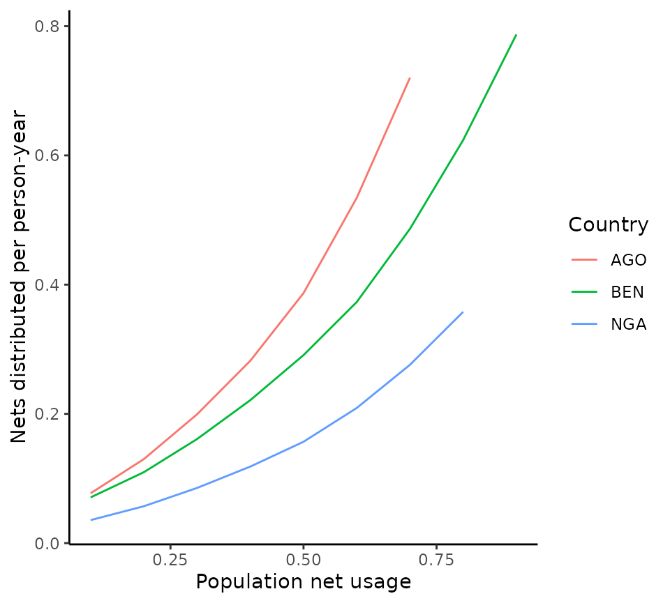
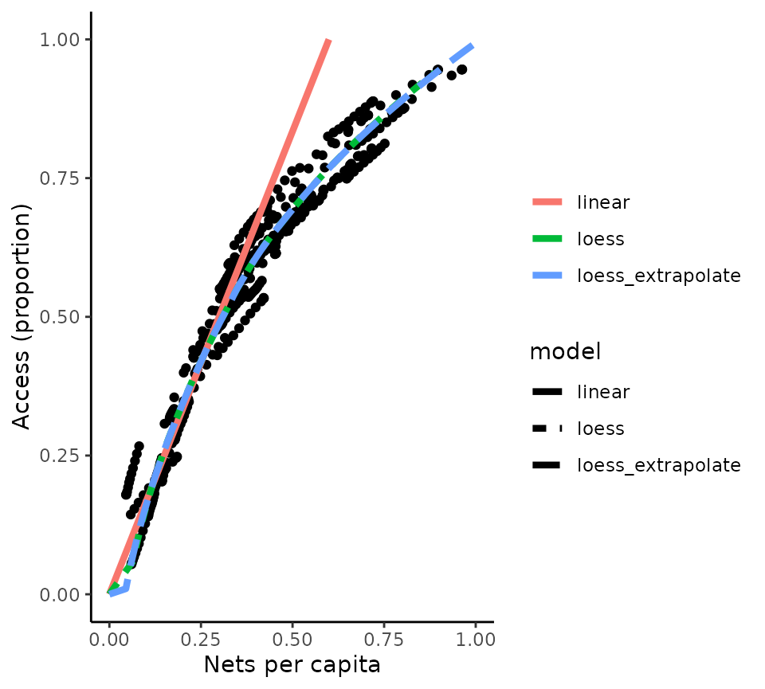
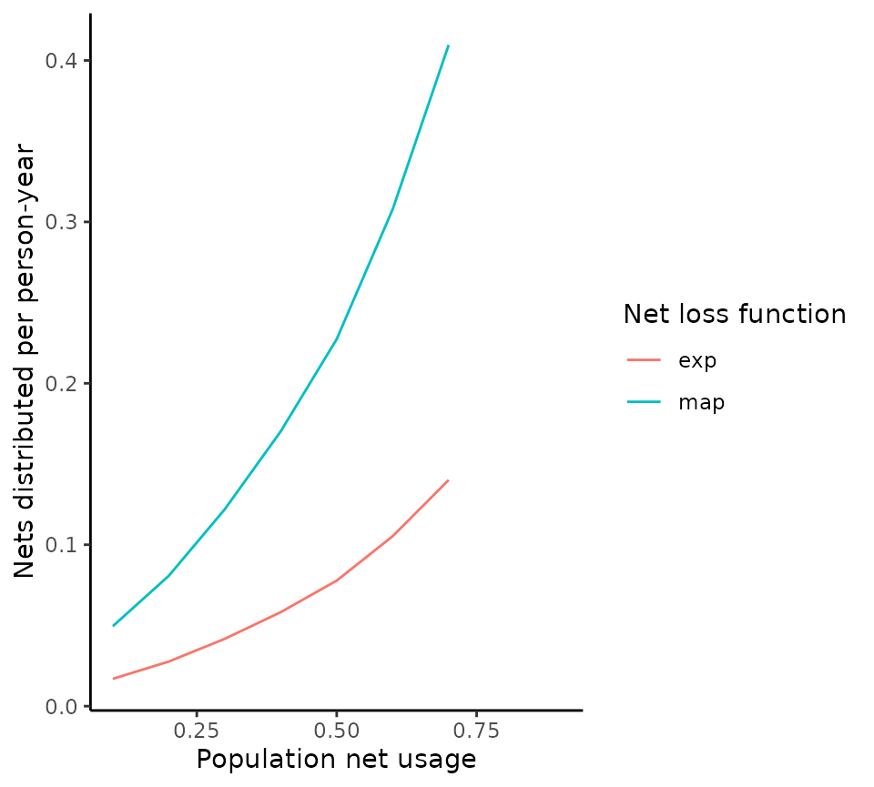

Converting measures of net coverage and number
overview.RmdBackground
In malariasimulation we can implement the bed net intervention by specifying the % of the population who are distributed a bed net (and assumed to use it) at given time points.
Simulations frequently involve scenarios with a constant bednet usage. To quantify the cost associated with a given steady-state bednet usage, it is necessary to estimate the corresponding number of nets that need to be distributed to achieve the given usage. The % of individuals protected by a net at any time point depends on the cumulative net distributions that have occurred and the duration of net retention. The netz package additionally allows to account for observed non-linearities in the relationship between net distributions and net access in the population, based on the work and data in Bertozzi-Villa, Amelia, et al. Nature communications 12.1 (2021): 1-12.
Conversion steps
The conversion from net usage to annual nets distributed per capita occurs in the following steps:
- convert net usage to net access using the observed (country-specific) use rate. By definition, net use rate = net usage/net access.
- convert net access to nets per capita using a Loess curve fitted to the observed relationship between the two across Africa.
- convert nets per capita to annual nets distributed per capita accounting for net distributions and net loss over time.
For a full definition of metric relating to net coverage, refer to the original paper (Bertozzi-Villaet al., 2021).
Quick example: usage to annual nets distributed conversion for specific countries
In its most simple form, only 2 steps are required: preparing the default datasets that inform country-specific net variables, and converting the desired usage to the annual nets distributed per capita.
# First, we specify the coutry iso codes and target usages
input <- expand_grid(iso3 = c("AGO", "BEN", "NGA"),
usage = seq(0.1, 0.9, 0.1))
# We can link these to half life, usage rates and distribution frequencies
input <- input %>%
left_join(get_halflife_data(), by = "iso3") %>%
left_join(get_usage_rate_data(), by = "iso3") %>%
mutate(distribution_freq = 365 * 3)
# Next we can follow the conversion chain to move between different bed net measures
output <- input %>%
mutate(access = usage_to_access(usage, usage_rate),
npc = access_to_crop(access),
anpcd = crop_to_distribution(npc, distribution_freq = distribution_freq, net_loss_function = net_loss_map, half_life = half_life))
#> Warning in usage_to_access(usage, usage_rate): Target usage(s) cannot be
#> achieved with input usage_rates - return NANote that the usage that can be achieved in a given country depends on its use rate. Where a target_usage exceeds the country-specific use rate, a warning is printed and NA is returned for the annual nets distributed.
The output shown below contains the distribution for each country and input usage. Intermediate steps in the conversion (access and crop) are also shown. The distribution is annual, but accounts for the specified net distribution frequency. For example, a 3 year distribution cycle would correspond to distributing the given output every year, or distributing 3 times the given output every 3 years. To calculate the costs of the distributed nets, the user additionally needs to convert the distribution to the annual number of nets distributed by multiplying with the target population at risk.
| iso3 | usage | half_life | usage_rate | distribution_freq | access | npc | anpcd |
|---|---|---|---|---|---|---|---|
| AGO | 0.1 | 401.50 | 0.7705595 | 1095 | 0.1297758 | 0.0888207 | 0.0340528 |
| AGO | 0.2 | 401.50 | 0.7705595 | 1095 | 0.2595517 | 0.1497124 | 0.0573979 |
| AGO | 0.3 | 401.50 | 0.7705595 | 1095 | 0.3893275 | 0.2295442 | 0.0880045 |
| AGO | 0.4 | 401.50 | 0.7705595 | 1095 | 0.5191033 | 0.3249202 | 0.1245705 |
| AGO | 0.5 | 401.50 | 0.7705595 | 1095 | 0.6488792 | 0.4454808 | 0.1707920 |
| AGO | 0.6 | 401.50 | 0.7705595 | 1095 | 0.7786550 | 0.6151634 | 0.2358463 |
| AGO | 0.7 | 401.50 | 0.7705595 | 1095 | 0.9084309 | 0.8292809 | 0.3179364 |
| AGO | 0.8 | 401.50 | 0.7705595 | 1095 | NA | NA | NA |
| AGO | 0.9 | 401.50 | 0.7705595 | 1095 | NA | NA | NA |
| BEN | 0.1 | 390.55 | 0.9608982 | 1095 | 0.1040693 | 0.0792541 | 0.0295596 |
| BEN | 0.2 | 390.55 | 0.9608982 | 1095 | 0.2081386 | 0.1229498 | 0.0458568 |
| BEN | 0.3 | 390.55 | 0.9608982 | 1095 | 0.3122079 | 0.1803973 | 0.0672832 |
| BEN | 0.4 | 390.55 | 0.9608982 | 1095 | 0.4162772 | 0.2477764 | 0.0924137 |
| BEN | 0.5 | 390.55 | 0.9608982 | 1095 | 0.5203465 | 0.3258919 | 0.1215486 |
| BEN | 0.6 | 390.55 | 0.9608982 | 1095 | 0.6244158 | 0.4179088 | 0.1558684 |
| BEN | 0.7 | 390.55 | 0.9608982 | 1095 | 0.7284851 | 0.5447588 | 0.2031799 |
| BEN | 0.8 | 390.55 | 0.9608982 | 1095 | 0.8325544 | 0.6986608 | 0.2605811 |
| BEN | 0.9 | 390.55 | 0.9608982 | 1095 | 0.9366237 | 0.8816417 | 0.3288279 |
| NGA | 0.1 | 810.30 | 0.8795992 | 1095 | 0.1136881 | 0.0827412 | 0.0579355 |
| NGA | 0.2 | 810.30 | 0.8795992 | 1095 | 0.2273763 | 0.1325488 | 0.0928109 |
| NGA | 0.3 | 810.30 | 0.8795992 | 1095 | 0.3410644 | 0.1983335 | 0.1388734 |
| NGA | 0.4 | 810.30 | 0.8795992 | 1095 | 0.4547526 | 0.2750843 | 0.1926144 |
| NGA | 0.5 | 810.30 | 0.8795992 | 1095 | 0.5684407 | 0.3643003 | 0.2550836 |
| NGA | 0.6 | 810.30 | 0.8795992 | 1095 | 0.6821289 | 0.4856699 | 0.3400668 |
| NGA | 0.7 | 810.30 | 0.8795992 | 1095 | 0.7958170 | 0.6408936 | 0.4487546 |
| NGA | 0.8 | 810.30 | 0.8795992 | 1095 | 0.9095051 | 0.8312384 | 0.5820344 |
| NGA | 0.9 | 810.30 | 0.8795992 | 1095 | NA | NA | NA |
The following plot shows the non-linear relationship between usage and distribution (i.e. cost) to achieve this for high usages.
# Plot relationship between net usage and nets distributed for each country
ggplot(output) +
geom_line(aes(
x = usage, y = anpcd,
colour = iso3
)) +
labs(x = "Population net usage", y = "Nets distributed per person-year", colour = "Country") +
theme_classic()
Quick example: usage to distribution conversion for a generic setting
If no specific country is being modelled, it is possible to use the same functions to represent a generic or average setting accounting for the observed nets data. The following code starts with the same steps as previously, but now calculates the distribution for a setting with a net use rate and half life corresponding to the median use rate and median half life observed across Africa.
# First, we specify the coutry iso codes and target usages
input <- expand_grid(usage = seq(0.1, 0.9, 0.1))
# We can link these to aggregate estimates of half life, usage rates and distribution frequencies
input <- input %>%
mutate(half_life = median(get_halflife_data()$half_life),
usage_rate = median(get_usage_rate_data()$usage_rate)) %>%
mutate(distribution_freq = 365 * 3)
# Do the conversion
output <- input %>%
mutate(access = usage_to_access(usage, usage_rate),
npc = access_to_crop(access),
anpcd = crop_to_distribution(npc, distribution_freq = distribution_freq, net_loss_function = net_loss_map, half_life = half_life))
#> Warning in usage_to_access(usage, usage_rate): Target usage(s) cannot be
#> achieved with input usage_rates - return NA| usage | half_life | usage_rate | distribution_freq | access | npc | anpcd |
|---|---|---|---|---|---|---|
| 0.1 | 596.775 | 0.8395046 | 1095 | 0.1191179 | 0.0847583 | 0.0473386 |
| 0.2 | 596.775 | 0.8395046 | 1095 | 0.2382357 | 0.1381924 | 0.0771821 |
| 0.3 | 596.775 | 0.8395046 | 1095 | 0.3573536 | 0.2086907 | 0.1165563 |
| 0.4 | 596.775 | 0.8395046 | 1095 | 0.4764715 | 0.2912745 | 0.1626803 |
| 0.5 | 596.775 | 0.8395046 | 1095 | 0.5955893 | 0.3890123 | 0.2172681 |
| 0.6 | 596.775 | 0.8395046 | 1095 | 0.7147072 | 0.5266302 | 0.2941293 |
| 0.7 | 596.775 | 0.8395046 | 1095 | 0.8338251 | 0.7007233 | 0.3913624 |
| 0.8 | 596.775 | 0.8395046 | 1095 | 0.9529429 | NA | NA |
| 0.9 | 596.775 | 0.8395046 | 1095 | NA | NA | NA |
Detailed example of further options and assumptions
The previous examples showed the quickest way to obtain the distribution for a given usage, but users can also:
- break down the conversion into its separate steps
- vary assumptions about the relationship crop and access, and about net loss
- use different (e.g. more recent) datasets of net metrics
The relationship between access and crop is derived from monthly data for the latest available year (2020) across African countries, and plotted below (corresponding to Figure 4 in the paper by Bertozzi-Villa et al). There are three options in the access_to_crop() function one “loess” a loess smooth of the observed data, a second “loess_extrapolate” a loess smooth of the observed data with the trend extrapolated to allow prediction for access values outside of the observed range and a third, “linear”, a linear fit to the lower (access < 0.5) set of observed values. This last model is very simple and does not fit the observed data well, so use with caution.
# Read in access vs NPC data:
access_npc_data <- get_npc_data()
access <- seq(0, 1, 0.01)
npc_loess <- access_to_crop(access, type = "loess")
npc_loess_extrapolate <- access_to_crop(access, type = "loess_extrapolate")
npc_linear <- access_to_crop(access, type = "linear")
model_data <- data.frame(access = rep(access, 3),
model = rep(c("loess", "loess_extrapolate", "linear"), each = length(npc_loess)),
npc = c(npc_loess, npc_loess_extrapolate, npc_linear))
# Plot curve
ggplot() +
geom_point(data = access_npc_data, aes(x = percapita_nets_mean, y = access_mean), col = "black") +
geom_line(data = model_data, aes(x = npc, y = access, colour = model, lty = model), size = 1.5) +
xlim(0, 1) +
ylim(0, 1) +
labs(x = "Nets per capita", y = "Access (proportion)", colour = "") +
theme_classic()
Under default assumptions, nets are assumed to be lost according to a smooth-compact function, which depends on the estimated net half life. The proportion of nets retained over a 3-year distribution cycle with a median retention time / half-life of 1.64 years is shown below.
# Calculate proportion of nets retained over a given distribution cycle
distribution_cycle_timesteps <- seq(0, 3 * 365, 1)
nets_retained <- net_loss_map(
t = distribution_cycle_timesteps,
k = 20,
half_life = 1.64 * 365
)
# k is a fixed rate parameter based on which net half lives were estimated in the paper
# Plot curve
ggplot() +
geom_line(aes(x = distribution_cycle_timesteps / 365, y = nets_retained)) +
ylim(0, 1) +
labs(x = "Years", y = "Proportion of bednets retained", colour = "") +
theme_classic()In these outputs, target_access is calculated as target_use/use_rate. Since access is a proportion, it cannot exceed 1. Therefore, where the target usage is higher than the observed use rate, access = NA.
Assumptions about the net loss function
The default option in the usage_to_distribution() function assumes that nets are lost according to a smooth-compact function (net_loss_function = net_loss_map). The alternative option is to assume exponential net loss (net_loss_function = net_loss_exp), which corresponds to the assumption in malariasimulation.
The proportion of nets retained over time are visualised for both options below, for a 3 year distribution cycle and a net half life of 1.64 years.
distribution_cycle_timesteps <- seq(0, 3 * 365, 1)
# Calculate proportion of nets retained assuming smooth-compact net loss
nets_retained_map <- net_loss_map(
t = distribution_cycle_timesteps,
k = 20,
half_life = 1.64 * 365
)
# k is a fixed rate parameter based on which net half lives were estimated in the paper
# Calculate proportion of nets retained assuming exponential net loss
nets_retained_exp <- net_loss_exp(
t = distribution_cycle_timesteps,
half_life = 1.64 * 365
)
# Plot curve
ggplot() +
geom_line(aes(
x = distribution_cycle_timesteps / 365, y = nets_retained_map,
colour = "Smooth-compact"
)) +
geom_line(aes(
x = distribution_cycle_timesteps / 365, y = nets_retained_exp,
colour = "Exponential"
)) +
ylim(0, 1) +
labs(x = "Years", y = "Proportion of bednets retained", colour = "") +
theme_classic()The effect of the net loss function on the relationship between net usage and distribution is shown below for a generic setting.
# First, we specify some general parameters
input <- data.frame(usage = seq(0.1, 0.9, 0.1),
half_life = median(get_halflife_data()$half_life),
usage_rate = median(get_usage_rate_data()$usage_rate),
distribution_freq = 365 * 3)
# Next we can follow the conversion chain to move between different bed net measures
output <- input %>%
mutate(access = usage_to_access(usage, usage_rate),
npc = access_to_crop(access),
anpcd_map = crop_to_distribution(npc,
distribution_freq = distribution_freq,
net_loss_function = net_loss_map,
half_life = half_life),
anpcd_exp = crop_to_distribution(npc,
distribution_freq = distribution_freq,
net_loss_function = net_loss_exp,
half_life = 5 * 365)) %>%
select(usage, anpcd_map, anpcd_exp) %>%
pivot_longer(cols = -usage, names_to = "model", values_to = "annual_percapita_nets_distributed", names_prefix = "anpcd_")
# Plot relationship between net usage and nets distributed for the 2 net loss assumptions
ggplot(data = output, aes(x = usage, y = annual_percapita_nets_distributed, col = model)) +
geom_line() +
labs(x = "Population net usage", y = "Nets distributed per person-year", colour = "Net loss function") +
theme_classic()
Use different datasets of net metrics
Refer to the documentation for get_halflife_data(), get_usage_rate_data() and get_npc_data() to see how more recent datasets can be used in the package.